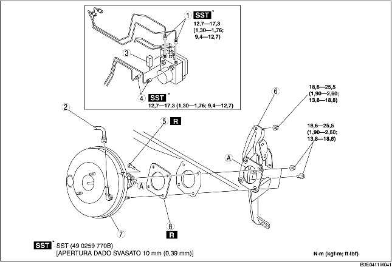

1. Rimuovere la batteria ed il relativo supporto. (Vedere RIMOZIONE/INSTALLAZIONE BATTERIA [ZJ, Z6]). (Vedere RIMOZIONE/INSTALLAZIONE BATTERIA [LF]).
2. Rimuovere il cilindro maestro. (Vedere RIMOZIONE/INSTALLAZIONE CILINDRO MAESTRO).
3. Rimuovere il connettore dell'interruttore del freno.
4. Rimuovere il pedale dell'acceleratore. (Vedere RIMOZIONE/INSTALLAZIONE PEDALE FRENO).
5. Rimuovere nell'ordine indicato in tabella.
6. Installare in ordine inverso rispetto alla rimozione.
7. Ispezionare il pedale del freno. (Vedere ISPEZIONE PEDALE FRENO).
8. Regolare il cavo dell'acceleratore. (Vedere ISPEZIONE/REGOLAZIONE CAVO ACCELERATORE [ZJ, Z6]). (Vedere ISPEZIONE/REGOLAZIONE CAVO ACCELERATORE [LF].)

.
|
1
|
Tubo freno
|
|
2
|
Tubo flessibile depressione
|
|
3
|
Connettore
(Vedere Dettaglio rimozione connettore).
|
|
4
|
Tubo freno
|
|
5
|
Perno di collegamento
(Vedere RIMOZIONE/INSTALLAZIONE PEDALE FRENO).
|
|
6
|
Gruppo pedale freno
(Vedere Dettaglio rimozione gruppo pedale freno).
|
|
7
|
Servofreno
|
|
8
|
Guarnizione
|
1. Rimuovere il bullone e i dadi di installazione del pedale freno.
2. Muovere il servofreno verso la parte posteriore veicolo.
3. Rimuovere il gruppo pedale freno.